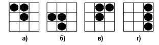
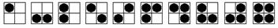

1021. Азбука для слепых
Известно,
что в книгах для слепых для обозначения различных букв
используются различные комбинации выступов, которые читающий различает на ощупь[1].
Пусть для обозначения буквы используется прямоугольник шириной мм и высотой мм, причем некоторые входящие в него квадратики размера содержат выступ.
Поскольку
слепой не видит границ прямоугольника, то он не может различить комбинации,
получающиеся друг из друга сдвигом. Так, он не может различить
комбинации а) и б) на рисунке 1. (В то же время комбинации а) и
в) являются различимыми, поскольку не могут быть получены друг из друга
сдвигом)

Рисунок 1.
Из-за
этого при разработке алфавита для слепых появилась проблема: сколько различных
букв можно представить с помощью выступов, если запрещается сопоставлять
различным буквам комбинации, получающиеся друг из друга сдвигом. Прямоугольник
совсем без выступов также нельзя использовать в качестве
буквы (поскольку при написании слова между некоторыми буквами может появиться
такой прямоугольник, например между а) и г) на рисунке 1).
Требуется
подсчитать количество различных букв, которые можно представить таким способом,
если прямоугольник имеет размер .
В качестве примера, все буквы размера приведены на рисунке
2. (Среди комбинаций, отвечающих одной букве, приведена только одна)

Рисунок 2.
Формат
входных данных
Входной
файл содержит числа и , разделенный пробелом. Поскольку человек одновременно не
может воспринимать слишком много информации,  .
.
Формат
выходных данных
Выведите
в выходной файл единственное число – количество различных букв, которые слепой
сможет различить при заданном размере прямоугольника.
Пример:
|
Пример теста |
Пример ответа |
|
3 2 2 3 3 2
4 |
10 400 184 |